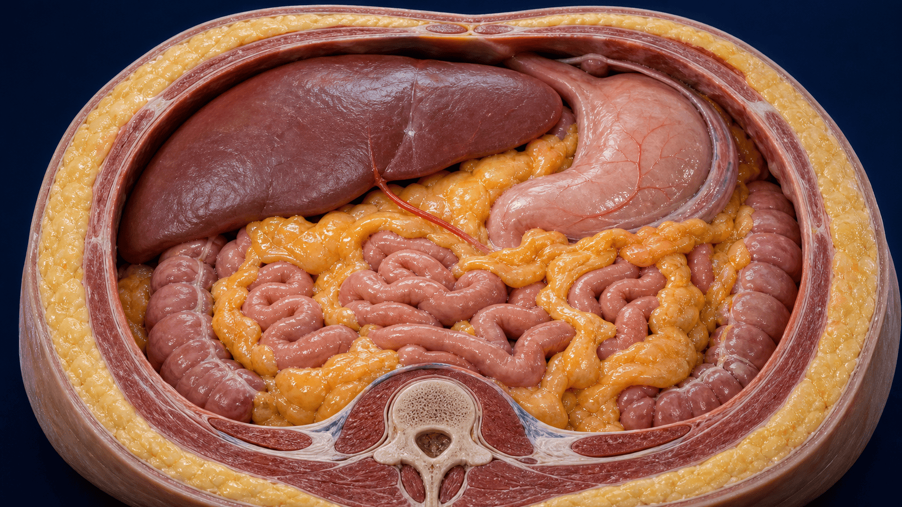
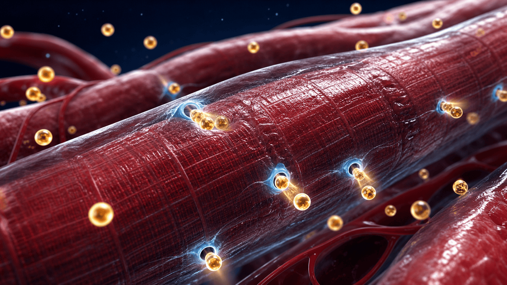
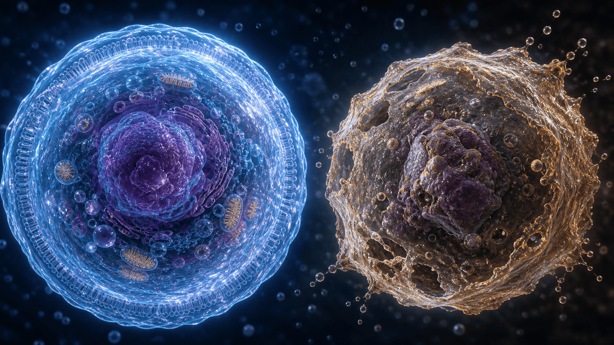

비만 주사 치료의 나침반,
체성분 분석 (InBody · BIA)
위고비(세마글루타이드)·마운자로(터제파타이드) 치료 중 '무엇이 줄고 무엇을 지켜야 하는가' — 체중계·BMI가 아니라 몸의 구성을 읽습니다
체중계와 BMI는 "무엇이" 들었는지 모릅니다
BMI는 지방과 근육을 구분하지 못합니다 — 한국인에서 특히 놓치기 쉽습니다
비만 진단 민감도
비만 진단 민감도
남성 실제 비만율
같은 InBody, 다른 질문을 합니다
헬스장은 '몸매'를 묻고, 진료실은 '대사 위험과 근육 보존'을 읽습니다
헬스장 인바디 — 겉을 봅니다
- 체중 · 체지방률 · 근육량 중심
- 목표: 멋진 몸매 · 근비대
- 대개 1회 측정의 절대값에 반응
- 대사질환 위험 해석은 없음
- 빠른 감량을 '성공'으로 간주
진료실 체성분 — 속을 읽습니다
- 내장지방 · 위상각 · 세포외수분까지
- 목표: 대사 위험 ↓ · 근육 보존
- 3개월+ '추세'와 표준화 조건 중시
- 지방간 · 당뇨 · 심혈관 위험과 연결
- GLP-1 치료 중 근손실을 방어
진료실에서 함께 보는 6가지 지표
단순 체지방률을 넘어, 각 지표는 서로 다른 기전으로 건강과 연결됩니다
체지방률 (PBF)
전체 무게 중 지방 비율. 지방이 많으면 몸에 만성 염증이 생기고 혈당·콜레스테롤 조절이 나빠집니다.
내장지방면적 (VFA)
배 속 장기 사이 지방. 문맥(장에서 간으로 바로 가는 핏길)을 타고 간으로 직행해 대사질환을 만드는 '활동성 지방'입니다.
골격근량 (SMM)
몸에서 포도당을 태우는 가장 큰 엔진. 인슐린 매개 혈당 처리의 약 80%를 담당합니다.
위상각 (Phase Angle)
세포막 건강·세포량을 반영. 여러 질환에서 예후·사망률의 강력한 예측인자입니다.
세포외수분비 (ECW/TBW)
전체 수분 중 세포 밖 물의 비율. 부종·염증·체액 불균형을 알려주는 신호입니다.
기초대사량 (BMR)
근육량이 결정하는 '기본 소비 열량'. 감량 중 지켜야 요요를 막을 수 있습니다.
손에 잡히지 않는 지방, 내장지방
피하지방과 달리 문맥을 통해 간으로 직행하는 '활동성 내분비 기관'
왜 위험한가
- 잡히는 뱃살은 피하지방, 단단하게 나온 배가 내장지방
- 문맥(장→간 핏길)으로 지방산·염증물질을 간에 직접 보냄
- → 인슐린 저항성 · 지방간(MASLD) · 이상지질혈증 · 혈압↑
- 한국인은 조금만 쪄도 복부로 직행 — 정상 체중도 방심 금물

내장지방은 가장 먼저 빠집니다
GLP-1 치료·식이·운동에 가장 빠르게 반응하는 지방입니다
근육은 혈당을 태우는 가장 큰 용광로
내장지방은 잘 빠지지만 근육은 지켜야 합니다 — 인슐린이 처리하는 포도당의 약 80%가 근육에서 쓰입니다
근육이 줄면 생기는 일
- 인슐린이 포도당 수송체(GLUT4)를 꺼내 근육이 혈당을 빨아들임
- 근육↓ → 식후 혈당 처리 저하 → 췌장 과부하 → 제2형 당뇨
- 운동은 인슐린이 없어도 근육의 혈당 흡수를 늘림
- 근육을 지키는 것 = 혈당 관리

근감소증과 근감소성비만
겉은 크지만 엔진은 경차 — 비만 치료 중 가장 경계할 상태입니다
사지골격근지수 (AWGS 2019)
BIA 기준 남 <7.0 · 여 <5.7 kg/m² (DXA는 여 <5.4). 키²로 보정한 사지 근육량입니다.
악력과 보행속도
악력 남 <28 · 여 <18 kg, 보행속도 <1.0 m/s (또는 5회 의자일어서기 ≥12초).
ESPEN · EASO 2022
근육량·근력 저하 + 과잉 지방. 선별 → 진단 → 병기(합병증 유무 Stage I/II)로 나눕니다.
근육은 숫자만이 아닙니다
근육↓는 당뇨·기능장애·사망 위험을 높입니다. 진단은 근육량뿐 아니라 근력·기능을 함께 평가합니다.
주사로 빠진 체중, 그중 일부는 근육입니다
GLP-1·이중작용제 감량의 상당 부분이 제지방(근육 포함) 손실입니다
제지방(근육) 손실 비율
평균 제지방량 감소
근감소성비만 ↓ (12개월)
위상각(Phase Angle) — 세포 건강 점수
여기서부터는 감량의 '질'을 확인합니다 — 위상각은 세포막 건강·세포량을 반영하는 '세포 건강 점수'입니다
무엇을 보나
튼튼한 세포막은 축전기처럼 전류를 지연시킵니다. 건강하고 수분 찬 세포일수록 위상각이 높습니다.
왜 예후 지표인가
암·중환자·COVID 등에서 사망률의 강력한 예측인자 (문헌 48편 중 42편에서 연관).
건강 성인 평균
남 ~7.3° · 여 ~6.4° (메타분석 249,844명). 나이 들면 감소하니 동일 연령대와 비교.
'좋은 감량'의 신호
굶어서 빼면 안 오릅니다. 단백질·근력운동으로 세포를 리모델링해야 위상각이 유지·상승합니다.

세포외수분비(ECW/TBW) — 부종·염증의 신호
전체 몸의 물 중 '세포 밖'에 있는 물의 비율 — 단순 살이 아닐 수 있습니다
무엇을 의미하나
- 건강한 세포는 물을 안에 잘 담습니다
- 노화·저알부민·심부전·신기능↓·만성염증 → 물이 세포 밖으로 샘
- "아침에 반지가 안 빠진다 · 다리가 붓는다"를 수치로 환산
- 근육량이 늘면 세포내수분↑ → 비율은 낮아짐
해석 기준 (참고 지표)
- 0.360~0.390 = 균형 잡힌 정상
- 0.400 이상 = 몸이 붓는 쪽(과수화·부종 신호)
- 운동선수·근육 많은 사람: 0.360에 가깝거나 이하
- 높다고 바로 확진 X — 3개월 '추세'로 판단
굶으면 대사가 꺼집니다
극단적 절식은 근육부터 태우고 기초대사량을 떨어뜨려 요요를 부릅니다
믿을 수 있는 InBody, 이렇게 측정합니다
절대값보다 '같은 조건에서의 추세' — 헬스장 즉석 측정과 가장 다른 지점입니다
기억할 목표 수치 한눈에
고정 목표가 있는 지표 중심입니다 — 세포외수분·기초대사량은 정해진 목표 대신 '추세'로 봅니다
남 <90 · 여 <85 cm
이 아래로 유지가 목표(넘으면 복부비만). KSSO 진료지침
남 <25% · 여 <35%
이 아래로 유지가 목표(넘으면 비만). Endocrine Society / AACE
추세로 봅니다
고정 기준(일본 100·한국 100~136cm²)보다 줄어드는 방향이 중요. 허리둘레 병행
남 ≥7.0 · 여 ≥5.7
kg/m²(BIA) 이상 유지가 목표(미만이면 근감소증). AWGS 2019
남 ≥28 · 여 ≥18 kg
이 이상 유지가 목표(미만이면 근감소증). AWGS 2019
남 ~7.3° · 여 ~6.4°
건강 성인 평균(연령차 큼). Clin Nutr 2020
비만 주사 치료 중, 오늘부터 7가지
체중이 아니라 '체성분'을 개선하는 실천 항목입니다
체중이 아니라,
'무엇이 남고 무엇이 빠졌는가'
광교바른내과는 비만 주사 치료 중 근육과 대사 건강을 지키며 함께합니다
광교중앙로 298, 4층
5대암 검진
같은 자료를 다시 볼 수 있어요